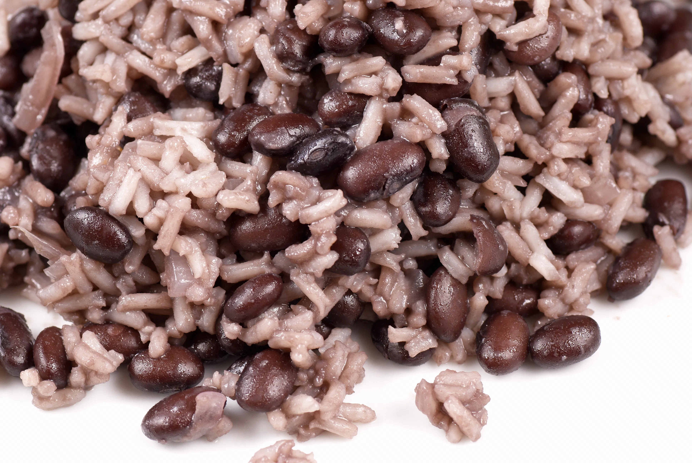

Gallo Pinto

Description
Nicaraguan Gallo Pinto is white rice mixed with kidney/red beans
Ingredients
- Cooked Red/Kidney Beans
- Cooked White Rice
- Onions
Steps
- Cook sliced onions in a pan with canola oil
- Add rice to pan
- Add cooked red beans with water that the beans were cooked in.
- Cook ingredients together until heated through.